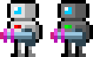
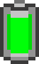

<html>
	<head>
		<meta charset="utf-8" />
		<title>Batt(l)ery</title>

		<style>
			html, body {
				margin: 0;
				padding: 0
			}
		</style>
	</head>
	<body>
		<!--<h1>LD 39 - Batt(l)ery</h1>
		<div id="game"></div>

		<pre>
<strong>Controls:</strong>
Player 1 (silver): <strong>Movement</strong> E,D,S,F, <strong>fire</strong> A, <strong>use power-up</strong> Q
Player 2 (black): <strong>Movement</strong> ARROWS, <strong>fire</strong> M, <strong>use power-up</strong> N

<strong>Goal:</strong>
Kill your opponent, but watch the state of the battery, all you actions (moving, firing) consumes power.
Battery is <strong>common</strong> for both of you! If the power lowers to 0, both robot will fall into sleep mode
and will wake up when 25% of the power are restored. The battery is slowly charging itself (1% per second).
To charge it quicker, pick power-ups and use them when you need it. There are two places with first-aid kits,
pick them when you are wounded, they are applied immediately, healing you 25% HP.

<strong>Game elements:</strong>
 - Player's robots, with a deadly weapon
 - Main common battery, robots consume its power
 - Power-up, can be used to charge main battery quickly
 - First-aid, heal
		</pre>-->

		<script src="build/game.js"></script>
	</body>
</html>